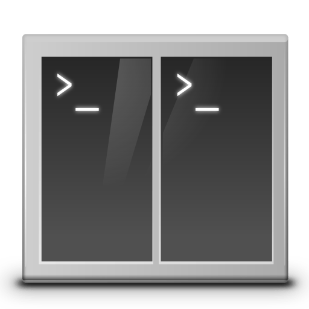

Tilix
Tilix is an advanced GTK3 tiling terminal emulator that follows the Gnome Human Interface Guidelines.
Try Tilix Source code
Features
Custom links
Terminals support custom titles and custom hyperlinks.
Drag and Drop
Terminals can be re-arranged using drag and drop both within and between windows.
Image Support
Transparent background image support.
Multiple Panes
Layout terminals in any fashion by splitting them horizontally or vertically.
Notifications
Supports notifications when processes are completed out of view.
Persistent Layouts
Grouping of terminals can be saved and loaded from disk.
Getting Tilix
The best way to get Tilix is from packages maintained for your specific Linux distribution. The following distributions have packages available.
-
Tilix is available in the default repository.
-
An ABBS Manifest is available for AOSC OS.
-
Tilix is available in Arch Linux’ repository and can be installed with:
pacman -S tilix -
Tilix is available for Cent OS as an EPEL Package via COPR.
-
Official Tilix packages are available for stretch-backports, buster and sid.
-
Tilix is available in the default repository and can be installed with:
sudo dnf install tilix -
Just
pkg install tilixor build it using ports:cd /usr/ports/x11/tilix && make -
Tilix is available for Nix and NixOS via nixpkgs.
-
Tilix packages for OpenSUSE can be found by performing a Package Search.
-
Tilix is available in Milis Linux’ repository and can be installed with:
mps kur tilix -
Tilix is available for Solus from their repositories. You can install tilix as follows:
eopkg install tilix -
Official Tilix packages are available for Ubuntu artful and bionic.
For older versions, tilix is available thanks to the WebUpd8 team and their PPA: WebUpd8.
-
Tilix is available in the voidlinux repositories and can be installed with:
xbps-install tilix -
For 64-bit distros where a package is not available, Tilix can be installed manually from the Tilix Github releases section by downloading tilix.zip and following these instructions:
sudo unzip tilix.zip -d / sudo glib-compile-schemas /usr/share/glib-2.0/schemas/
Contribute
Tilix welcomes contributions and encourages participation from the community, for developers please visit the Tilix Github Development site to contribute. For translators, Tilix is localized using Weblate, please visit the Weblate hosted Tilix translations site in order to assist with translations, please do not submit direct pull requests to the repository for translations.
If you are having issues with Tilix, feel free to open issues in the Tilix Github Issues page as necessary. Developers and users can also be found on IRC on the freenode network in the #terminix room.